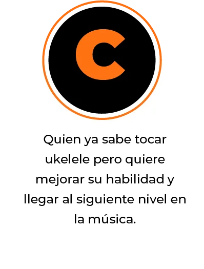
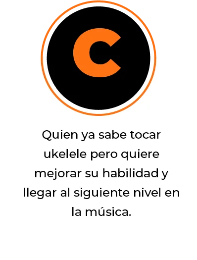

✅Acceso a la Escuela virtual del Ukelele (Valor: US $197)
✅Ebook: La guía definitiva para tocar Ukelele en 7 días (Valor: US $92)
✅Mentorías (Valor: US $38)
✅Guías secretas formato PDF (US $30)
✅Acceso a la Comunidad Secreta de Ukelele (Valor: US $40)
✅Playlist Ukelele and relax con 56 canciones de los mejores interpretes del Ukelele (Valor: Incalculable)
✅Diploma Ukelele Master Al terminar el módulo intermediario de la Escuela Virtual UkelelePro (Valor: Incalculable)
SI! QUIERO EMPEZAR YA
Esta es una OFERTA ESPECIAL que puede cerrar en cualquier momento
 
